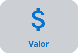

O sistema de pontuação em cotações segue critérios específicos para avaliar os fornecedores. Cada critério recebe uma pontuação de 1 a 4, com base na sua classificação em relação aos demais. O valor de peso é multiplicado pela quantidade de fornecedores para determinar a pontuação final.
O prazo de pagamento é avaliado de forma distinta, com pagamento "A Prazo" recebendo mais pontos que "À Vista".
Para o valor, é utilizada uma fórmula que considera a proporção entre o valor total e a quantidade atendida em comparação aos demais fornecedores.
O prazo de entrega é avaliado buscando o menor prazo dentre os fornecedores.
Quanto à quantidade atendida, quanto maior a quantidade, melhor a pontuação em relação a esse critério.
A pontuação total é a soma das pontuações individuais em cada critério. Em caso de empate em um critério, os fornecedores normalmente recebem a mesma pontuação. Em empates na pontuação total, o sistema analisa os critérios individualmente, acrescentando um ponto ao fornecedor empatado que tiver vantagem em algum critério.